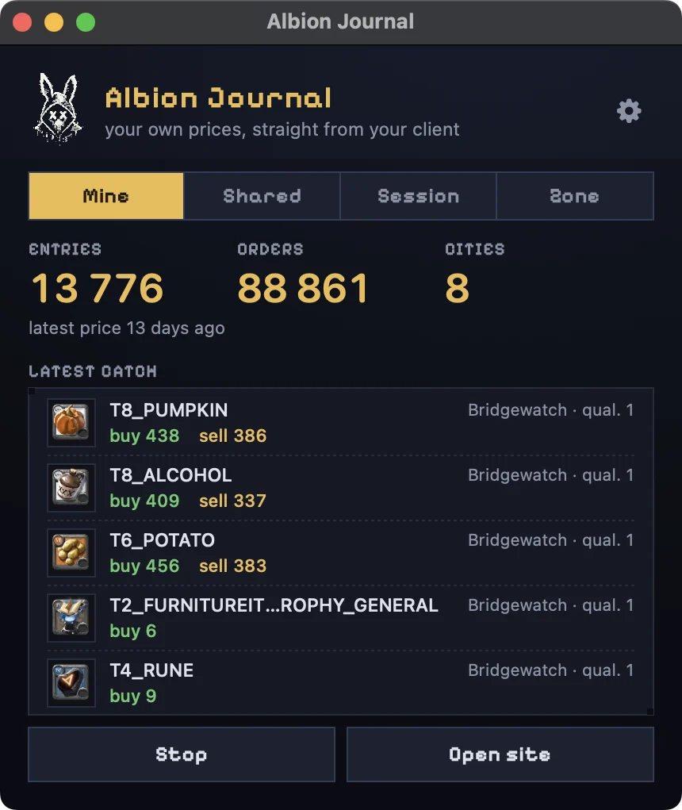
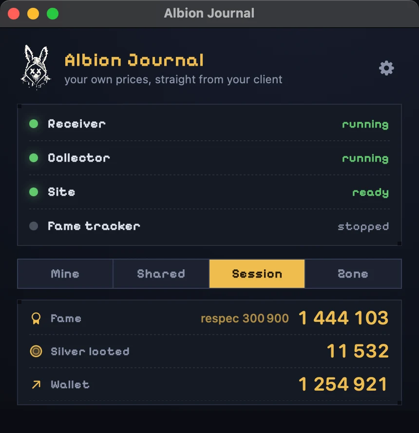
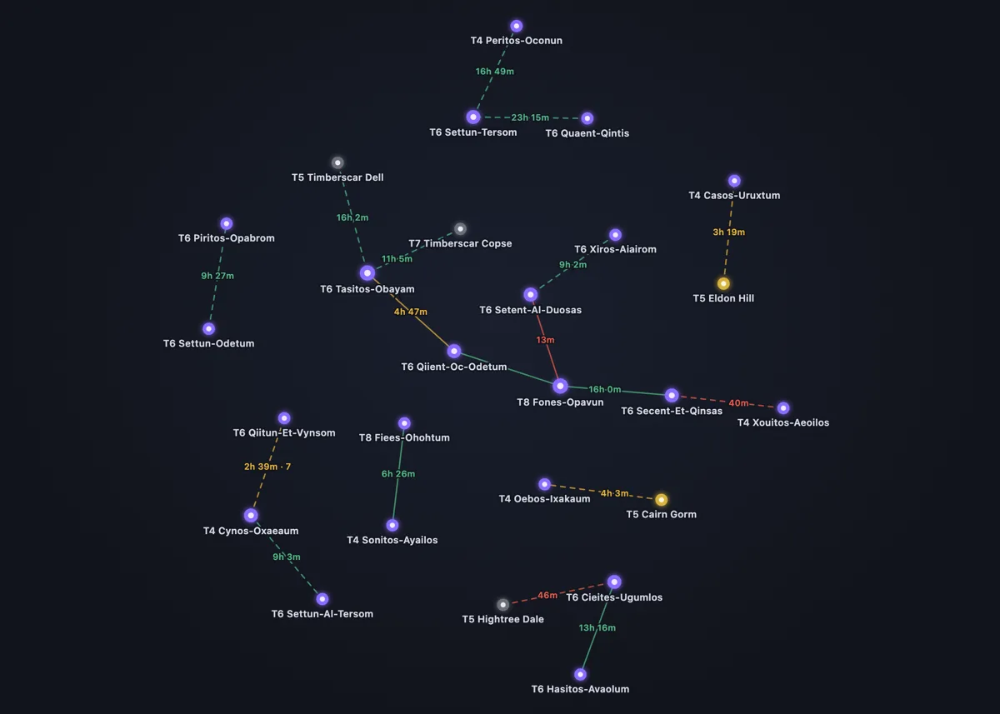
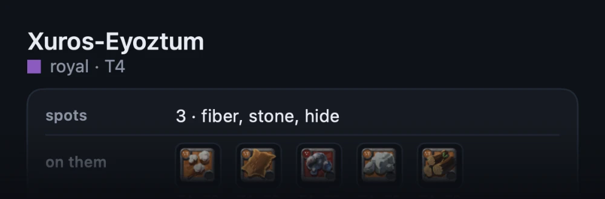
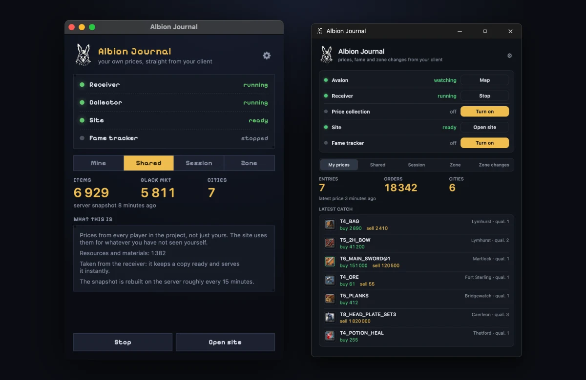

Свои цены и выгодный крафт
Программа берёт цены прямо из твоего клиента игры. На сайте с крафтом сразу видно свежие цифры и твои ордера: что выгодно сделать и где продать.
Сайт с крафтом →
Фейм и серебро за сессию
Сколько фейма и серебра принесла вылазка — считается само, пока ты играешь. Сбросил — и новая сессия с нуля.

Общая карта дорог Авалона
Карту собирают сами игроки: дороги приходят из Albion Journal, у каждой видно, сколько ей осталось. На сайте можно найти путь между зонами.
Открыть карту →
Заметка о дороге по одной кнопке
Наведись на портал и нажми одну кнопку — программа покажет короткую заметку о дороге: название, вид зоны и тир. Так проще планировать походы по Авалону.

Mac и Windows, бесплатно
Одна программа для обеих систем. Новые версии ставятся сами — заново скачивать ничего не нужно.